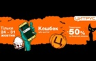

К 31 октября готовятся заранее, например, в США костюмы на Хэллоуин начинают продавать еще в августе. Обычно, в канун Дня всех святых устраивают вечеринки, на которые гости приходят в маскарадных костюмах.
Вместе с нарядом подбирают прическу, маникюр и макияж. Korrespondent.net расскажет, каким может быть макияж на Хэллоуин и как сделать грим для девушек, парней и детей в домашних условиях.
Хэллоуин отмечается 31 октября. В Украине праздник в канун Дня всех святых празднуется относительно недавно, но с каждым годом он становится все популярнее. Korrespondent.net расскажет, как провести Хэллоуин в Киеве и куда пойти в столице во вторник-среду.
По легенде Хэллоуин, это единственный день в году, когда души мертвых могут вернуться в мир живых. “Жуткий” праздник отмечают с размахом, заранее подготавливают сценарий вечеринки. Как показывает практика, не обязательно готовить оригинальные блюда на Хэллоуин, достаточно тематически украсить самую простую еду. Korrespondent.net подскажет, что приготовить на Хэллоуин, как составить детское меню.

По легенде Хэллоуин, это единственный день в году, когда души мертвых могут вернуться в мир живых. “Жуткий” праздник отмечают с размахом, заранее подготавливают сценарий вечеринки. Как показывает практика, не обязательно готовить оригинальные блюда на Хэллоуин, достаточно тематически украсить самую простую еду. Korrespondent.net подскажет, что приготовить на Хэллоуин, как составить детское меню.
© Корреспондент.нет